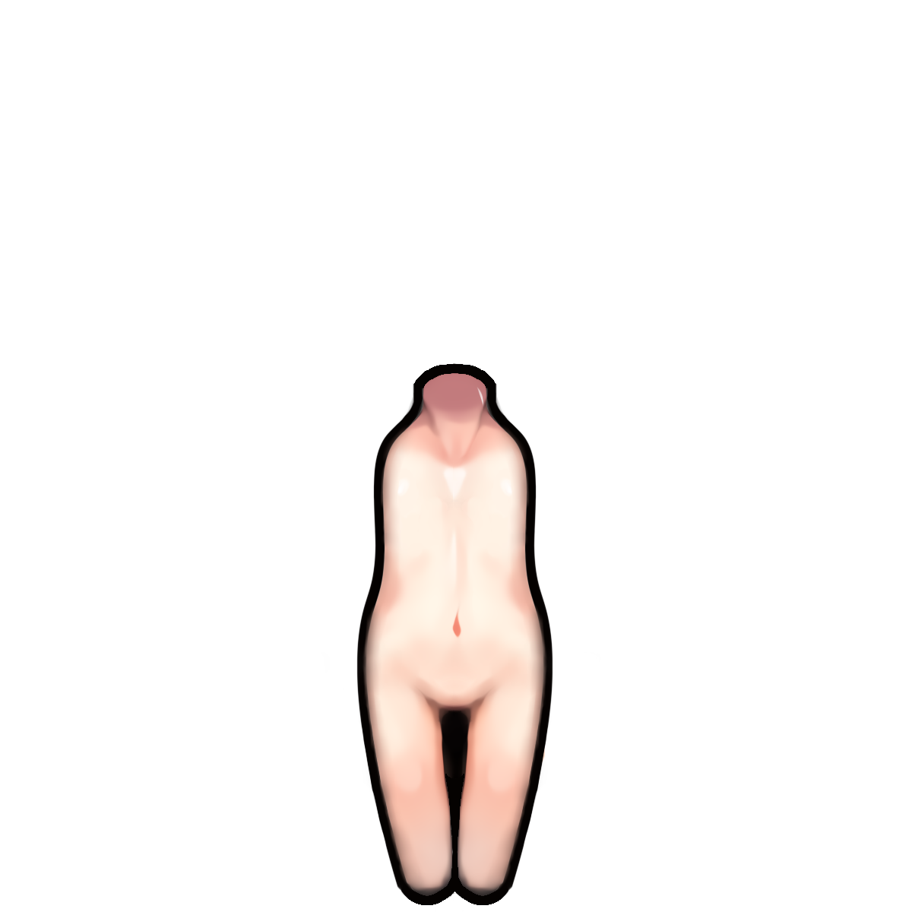
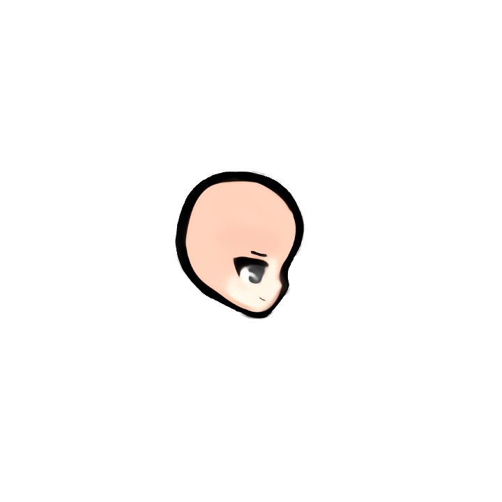
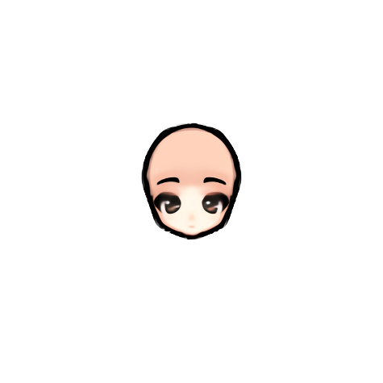
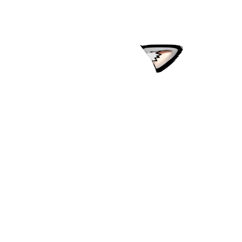
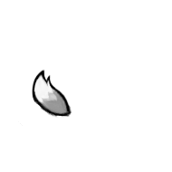
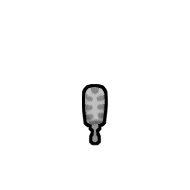
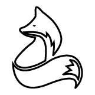

魅狐Kurin_Body
无独立贴图
—
（无描述）
战狐的可玩种族 def（Kurin_Race）+ 躯体 / 头部 / 脸 / 耳 / 尾 换装部件。下列为渲染部件的代表贴图（透明底，棋盘为背景）。族本体大量细节在 Race/Race.xml 的 alienPartGenerator（多种头型/脸/耳/尾组合）。








比原版多了这些独立层，按 drawOrder 从内到外叠加：-4/-3 = 内衣/袜(原版没有),0/1/2 = 战狐自己的 OnSkin/Middle/Shell 分身层。
| def | 中文名 | drawOrder | 原名 |
|---|---|---|---|
Kurin_Underwear | 魅狐白色内衣 | -4 | underwear |
Kurin_Stocking | 长袜 | -3 | stocking |
Kurin_Apparel_OnSkin | 魅狐贴身服饰 | 0 | kurin onskin apparel |
Kurin_Apparel_Middle | 魅狐中层服饰 | 1 | kurin middle apparel |
Kurin_Apparel_Shell | 魅狐外层服饰 | 2 | kurin shell apparel |
Kurin_Body
—
（无描述）
Kurin_Tail
—
（无描述）
Kurin_Ear
—
（无描述）
Kurin_Race
—
一种拥有狐狸基因的女性类人种族。她们最初是来自闪耀世界奥罗拉的定制伴侣，但一场内战迫使她们离开了自己的母星。如今，她们已散居于各个边缘世界。